TRIP OVERVIEW
Day 1 – The STRAT SkyPod · Neon Museum · The Mob Museum · Springs Preserve
Day 2 – Fremont Street Experience · Bellagio Conservatory & Botanical Gardens · Fountains of Bellagio · High Roller at The LINQ · AREA15
Day 3 – Red Rock Canyon National Conservation Area · Seven Magic Mountains
Day 4 – Hoover Dam · Lake Mead National Recreation Area · National Atomic Testing Museum · Pinball Hall of Fame
Day 5 – The Venetian Gondola Rides · Paris Las Vegas Eiffel Tower Experience · Big Apple Coaster at New York-New York
Day 1
🏨 From Hotel: 🚶 20 min · 🚕 6 min → The STRAT SkyPod
1. The STRAT SkyPod
↳ The STRAT tower stands 1,149 feet on the north Strip, the tallest freestanding observation structure west of the Mississippi. The SkyPod deck at 869 feet offers 360-degree views across the Strip and the Mojave Desert.
🏛️ Monday - Thursday 12:00pm - 11:59pm
🏛️ Friday - Sunday 10:00am - 11:59pm
⏰ ~1 hr 30 min
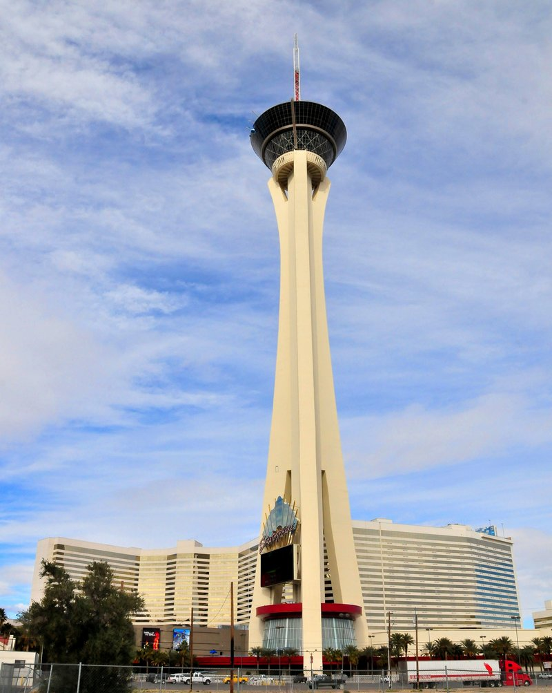
🚶 25 min · 🚕 5 min → Neon Museum
2. Neon Museum
↳ The Neon Museum preserves over 200 retired neon signs from casinos and hotels in an outdoor collection called the Neon Boneyard. Signs span the 1930s through the early 2000s and trace the city's visual identity as a pioneer of large-scale electric advertising.
🏛️ Daily 9:00am - 3:00pm
⏰ ~1 hr 30 min
.jpg)
🚶 10 min · 🚕 3 min → The Mob Museum
3. The Mob Museum
↳ The Mob Museum occupies the former federal courthouse where the 1950 Kefauver Senate hearing on organized crime was held. Four floors trace organized crime from Prohibition through the mob-connected construction of the city, with FBI wiretap equipment and the St. Valentine's Day Massacre wall panel.
🏛️ Daily 9:00am - 9:00pm
⏰ ~2 hr

🚕 10 min → Springs Preserve
4. Springs Preserve
↳ Springs Preserve marks the site of the original Las Vegas Springs, the desert water source that drew the city's first settlement. The 180-acre grounds include botanical gardens, desert wildlife habitats, and a museum tracing the natural and human history of the valley.
🏛️ Thursday - Monday 9:00am - 4:00pm
🚫 Closed Tuesday - Wednesday
⏰ ~2 hr 30 min

🚕 12 min → hotel
Day 2
🏨 From Hotel: 🚶 12 min · 🚕 8 min → Fremont Street Experience
1. Fremont Street Experience
↳ The Fremont Street Experience covers five blocks of downtown Las Vegas under a 90-foot-high LED canopy carrying 49 million lights — the world's largest video screen display. Free live music plays on three stages nightly, and the Viva Vision light show runs on the hour after dark.
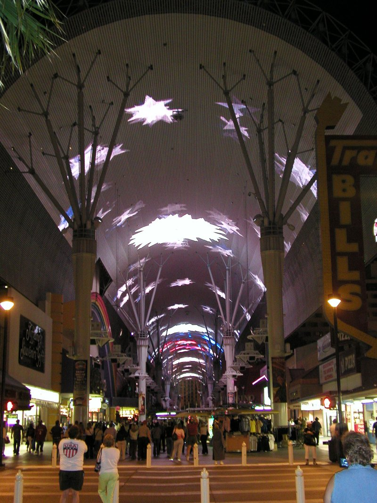
🚶 25 min · 🚕 10 min → Bellagio Conservatory & Botanical Gardens
2. Bellagio Conservatory & Botanical Gardens
↳ The Bellagio's 14,000-square-foot conservatory sits just off the hotel lobby and rotates through five seasonal displays a year — spring, summer, fall, winter, and Lunar New Year — built from thousands of live plants and hand-crafted sculptural elements.
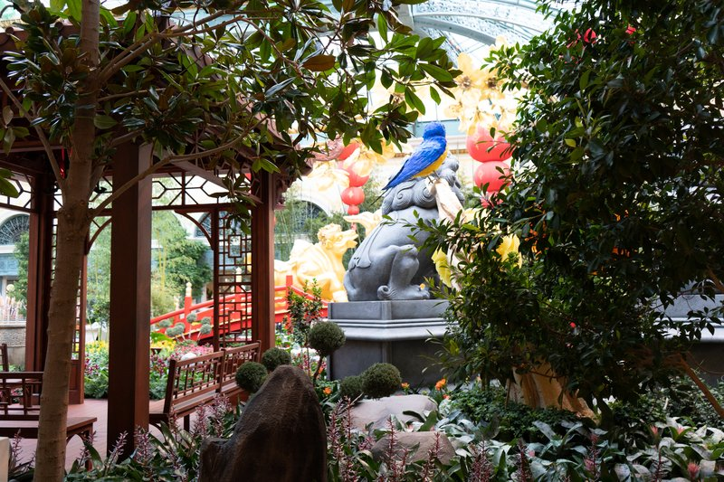
🚕 1 min → Fountains of Bellagio
3. Fountains of Bellagio
↳ The Fountains of Bellagio choreograph water, light, and music across an 8.5-acre lake on the Strip. Shows run every half hour in the afternoon and every 15 minutes after 8:00pm, each lasting the length of one song.
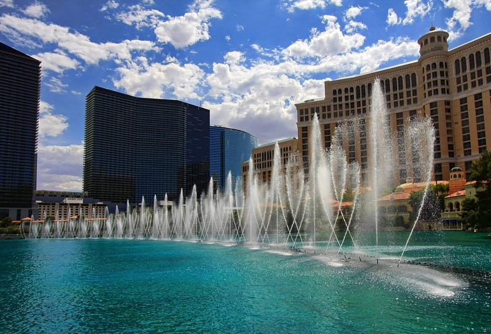
🚶 15 min · 🚕 6 min → High Roller at The LINQ
4. High Roller at The LINQ
↳ The High Roller stands 550 feet tall at the rear of the LINQ Promenade, the tallest observation wheel in North America. A single rotation takes 30 minutes in an air-conditioned cabin, with views stretching across the Strip to the surrounding desert.
🏛️ Daily 12:00pm - 12:00am
⏰ ~1 hr

🚕 15 min → AREA15
5. AREA15
↳ AREA15 is an experiential entertainment complex built around large-scale interactive art. Its anchor attraction, Meow Wolf's Omega Mart, disguises a surreal alternate-reality installation behind the front of a fictional grocery store, with hidden portals leading to room after room of immersive art.
🏛️ Daily 11:30am - 10:00pm
⏰ ~2 hr
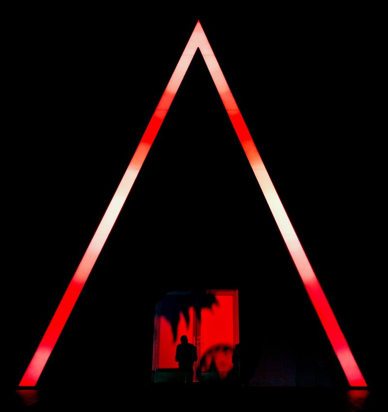
🚶 20 min · 🚕 10 min → hotel
Day 3
🏨 From Hotel: 🚕 25 min → Red Rock Canyon National Conservation Area
1. Red Rock Canyon National Conservation Area
↳ Red Rock Canyon protects 197,349 acres of red and grey sandstone escarpments 17 miles west of the Strip. The 13-mile scenic drive loops past trailheads, overlooks, and the striated Calico Hills, with the Keystone Thrust fault visible where grey limestone sits atop younger red sandstone.
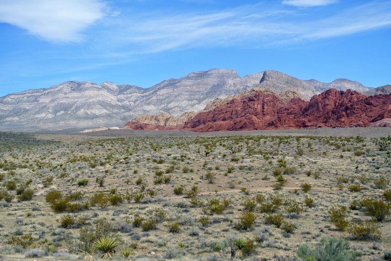
🚕 35 min → Seven Magic Mountains
2. Seven Magic Mountains
↳ Swiss artist Ugo Rondinone stacked locally sourced boulders into seven towers over 30 feet tall, each painted in fluorescent colors that stand out against the Mojave Desert backdrop. Installed in 2016 near Jean Dry Lake, the piece has stayed on view well past its original two-year run.
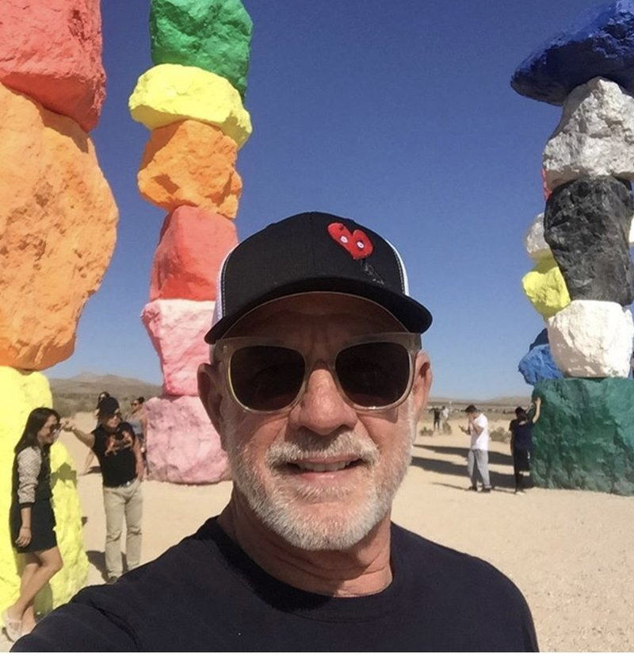
🚕 30 min → hotel
Day 4
🏨 From Hotel: 🚕 40 min → Hoover Dam
1. Hoover Dam
↳ Hoover Dam rises 726 feet over the Colorado River, built between 1931 and 1936 to control flooding and generate hydroelectric power for the Southwest. The visitor center's observation deck looks straight down the dam face to the river and across to the Mike O'Callaghan–Pat Tillman Memorial Bridge.
🏛️ Daily 9:00am - 5:00pm
⏰ ~2 hr
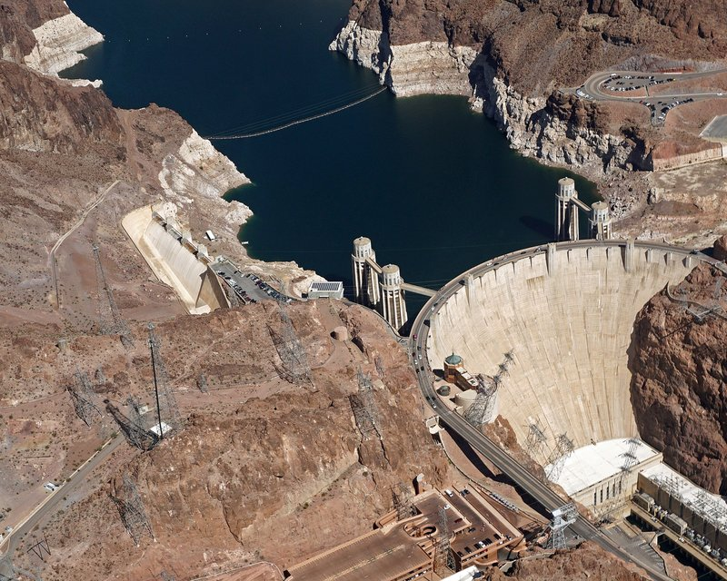
🚕 12 min → Lake Mead National Recreation Area
2. Lake Mead National Recreation Area
↳ Lake Mead formed behind Hoover Dam as the Colorado River backed up into the desert, and remains the largest reservoir by volume in the United States. Overlooks along the shoreline show the "bathtub ring" of mineral deposits marking decades of historic high-water lines against the surrounding desert mountains.
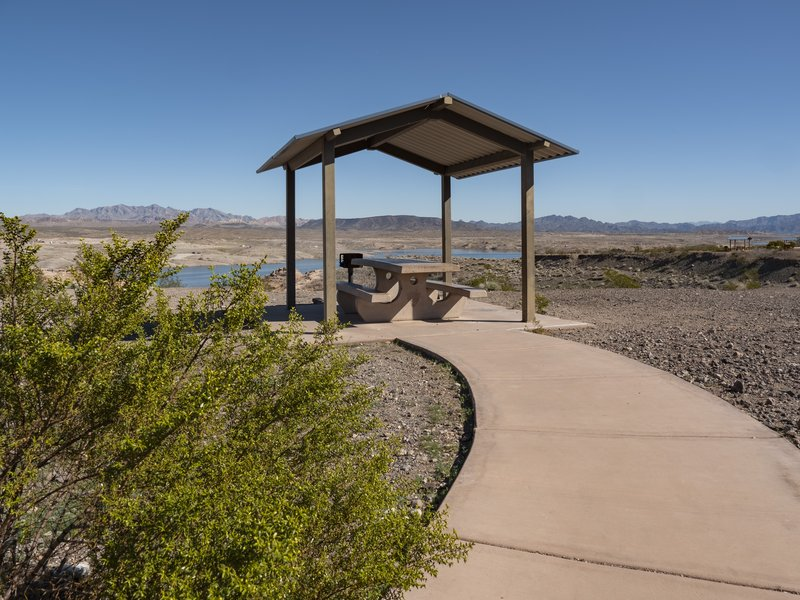
🚕 35 min → National Atomic Testing Museum
3. National Atomic Testing Museum
↳ A Smithsonian Institution affiliate since opening in 2005, the museum traces 70 years of nuclear testing at the Nevada Test Site through original equipment, a Ground Zero Theater simulating an above-ground blast, and a section on Cold War-era atomic pop culture.
🏛️ Daily 10:00am - 6:00pm
⏰ ~1 hr 30 min
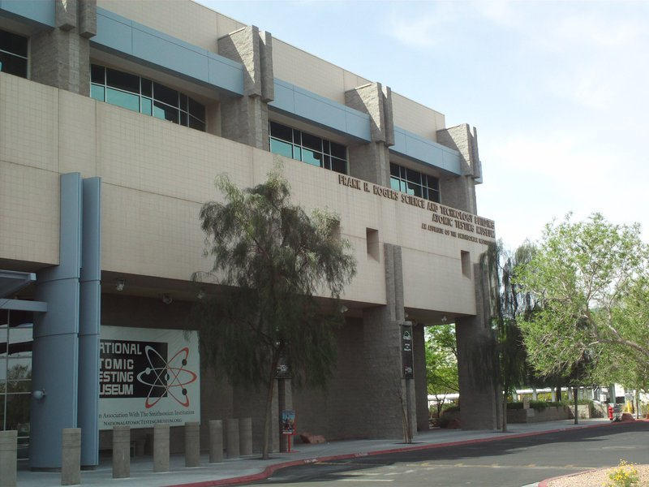
🚶 15 min · 🚕 8 min → Pinball Hall of Fame
4. Pinball Hall of Fame
↳ Volunteers restore and operate roughly 700 pinball and arcade machines spanning the 1950s through today, with proceeds from play going to the Salvation Army. Machines are set to a coin's original cost or close to it, and nearly every unit stays in working order on the floor.
🏛️ Sunday - Thursday 10:00am - 9:00pm
🏛️ Friday - Saturday 10:00am - 10:00pm
⏰ ~1 hr
🆓 Free
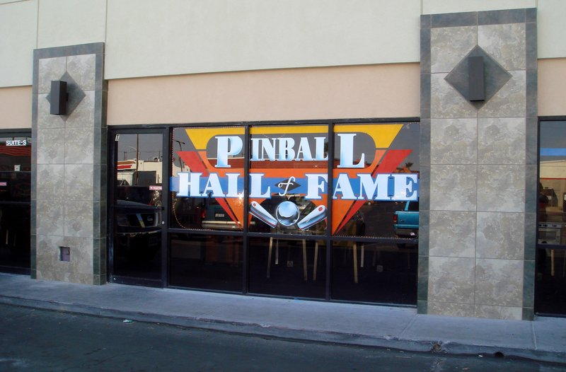
🚶 20 min · 🚕 8 min → hotel
Day 5
🏨 From Hotel: 🚶 33 min · 🚕 3 min → The Venetian Gondola Rides
1. The Venetian Gondola Rides
↳ The Venetian recreated Venice's Grand Canal across the casino floor, lined with hand-painted bridges and a sky-painted ceiling simulating an outdoor piazza. Gondoliers in striped shirts pole the boats while singing Italian opera through the Grand Canal Shoppes.
🏛️ Sunday - Thursday 10:00am - 11:00pm
🏛️ Friday - Saturday 10:00am - 12:00am
⏰ ~45 min
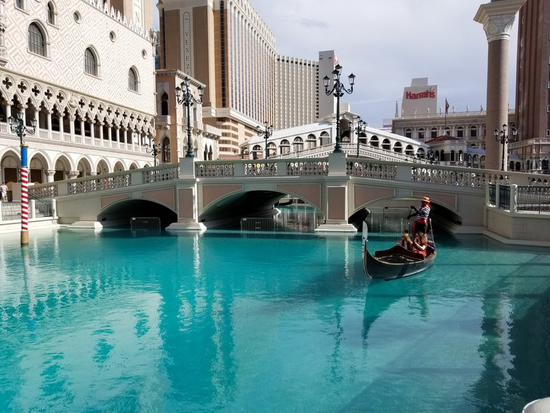
🚶 16 min · 🚕 3 min → Paris Las Vegas Eiffel Tower Experience
2. Paris Las Vegas Eiffel Tower Experience
↳ The half-scale Eiffel Tower rises 541 feet over the Paris Las Vegas casino floor, built from the original Gustave Eiffel blueprints. Elevators reach the 46-story observation deck at 460 feet, where views look directly across to the Bellagio Fountains and along the full Strip in both directions.
🏛️ Daily 12:00pm - 12:00am
⏰ ~1 hr
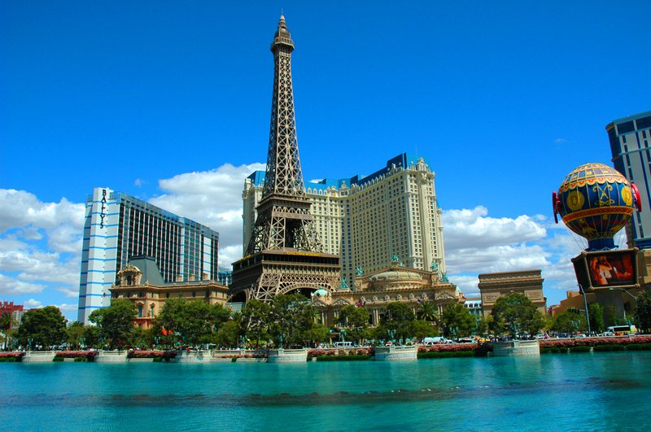
🚶 19 min · 🚕 3 min → Big Apple Coaster at New York-New York
3. Big Apple Coaster at New York-New York
↳ The roller coaster wraps the New York-New York exterior, threading through scaled-down replicas of the Empire State Building, Chrysler Building, and Statue of Liberty. The coaster reaches 67 mph, includes a 203-foot drop, two vertical loops, and a 540-degree spiral.
🏛️ Monday - Thursday 11:00am - 11:00pm
🏛️ Friday - Sunday 11:00am - 12:00am
⏰ ~30 min
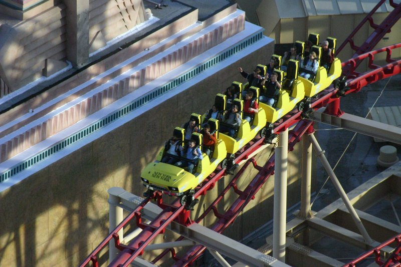
🚕 8 min → hotel
🗓️ Weekly Closures
Museums · Closed Tuesday – Wednesday
📅 Tours
Viator
↳ Small-group guided walk along the Strip with a local covering Bellagio fountains, the Venetian canals, and lesser-known corners off the main corridor.
🕐 6:00pm · ⏳ 2 hr 30 min · 👥 12 max
🚶 20 min · 🚕 5 min
↳ Small-group minibus tour of mob history covering sites of infamous murders, car bombings, and mob-controlled casinos from the 1940s through the 1980s.
🕐 10:00am · ⏳ 2 hr · 👥 Small group
🚕 8 min
↳ Helicopter flight from Boulder City over Hoover Dam, Lake Mead, and the Grand Canyon West Rim — panoramic Mojave Desert and Colorado River views.
🏨 ↔ 🚐
🕐 8:00am · ⏳ 4 hr · 👥 Small group
↳ Half-day guided tour to Hoover Dam with a stop at the bypass bridge overlook and the visitor center. The guide covers construction history and the engineering of the 17-turbine power plant.
🏨 ↔ 🚐
🕐 8:00am · ⏳ 5 hr · 👥 Small group
↳ Morning half-day trip to Valley of Fire State Park with stops at Atlatl Rock petroglyphs, the White Domes, and red Aztec sandstone formations.
🏨 ↔ 🚐
🕐 7:30am · ⏳ 5 hr · 👥 Small group
GetYourGuide
↳ Helicopter tour from Boulder City to the Grand Canyon West Rim with views over Hoover Dam, Lake Mead, and Black Canyon.
🏨 ↔ 🚐
🕐 8:00am · ⏳ 4 hr · 👥 Small group
↳ Guided tour to Nevada's oldest state park, with stops at the Visitor Center, White Domes Trail, and Fire Wave formation.
🏨 ↔ 🚐
🕐 7:30am · ⏳ 5 hr · 👥 Small group
↳ Half-day guided tour to Hoover Dam with access to the bypass bridge overlook and the dam visitor center.
🏨 ↔ 🚐
🕐 8:00am · ⏳ 5 hr · 👥 Small group
↳ Helicopter tour that descends to the Grand Canyon floor beside the Colorado River, then returns over the Mojave.
🏨 ↔ 🚐
🕐 8:30am · ⏳ 4 hr 30 min · 👥 Small group
↳ Evening minibus tour along the Strip and downtown covering major casino landmarks, the Fremont Street Experience, and the city's illuminated skyline.
🏨 ↔ 🚐
🕐 7:30pm · ⏳ 3 hr · 👥 Small group
TripAdvisor
↳ Guided Strip walk covering the Bellagio fountains, Caesars Palace, the Venetian, and lesser-known architectural curiosities with narration on the casino construction era.
🕐 6:00pm · ⏳ 2 hr · 👥 Small group
🚶 20 min · 🚕 5 min
↳ Guided walk through downtown mob history covering Binion's Gambling Hall, historic crime sites, and Fremont Street landmarks, ending at The Mob Museum.
🕐 10:00am · ⏳ 1 hr 30 min · 👥 Small group
🚕 8 min
↳ Full-day motorcoach tour to the West Rim with Skywalk access, Eagle Point overlook, and Guano Point panoramic views.
🏨 ↔ 🚐
🕐 7:00am · ⏳ 10 hr · 👥 Small group
↳ Half-day tour to Hoover Dam with the bypass bridge overlook and the dam visitor center covering construction history and the 17-turbine power plant.
🏨 ↔ 🚐
🕐 8:00am · ⏳ 5 hr · 👥 Small group
↳ Morning half-day trip to Valley of Fire with guided stops at Atlatl Rock petroglyphs, the White Domes, and the valley's red-sandstone formations.
🏨 ↔ 🚐
🕐 7:00am · ⏳ 5 hr · 👥 Small group
☕ Cappuccino
Café Cutò · 4.5⭐ · 100+ reviews
Vesta Coffee Roasters · 4.7⭐ · 200+ reviews
🏛️ Monday - Saturday 7:00am - 5:00pm
🏛️ Sunday 8:00am - 4:00pm
🚕 10 min
🫕 Restaurants Near Hotel
Mother Wolf · 4.5⭐ · 200+ reviews
↳ Roman trattoria by chef Evan Funke; hand-rolled pasta, wood-fired preparations.
🏛️ Daily 5:00pm - 10:30pm
🚕 1 min
Don's Prime · 4.4⭐ · 100+ reviews
↳ Upscale steakhouse serving USDA Prime and Japanese A5 wagyu; seafood menu.
🏛️ Daily 5:30pm - 10:30pm
🚕 1 min
Komodo · 4.3⭐ · 150+ reviews
↳ Southeast Asian menu of crispy rice, short ribs, and sushi by David Grutman.
🏛️ Daily 5:00pm - 11:00pm
🚕 1 min
🍽️ Downtown Restaurants
Carson Kitchen · 4.6⭐ · 800+ reviews
↳ Creative American small plates; deviled eggs and crispy chicken skin.
🏛️ Tuesday - Saturday 11:00am - 10:00pm · Sunday 10:00am - 9:00pm
🚫 Closed Monday
Esther's Kitchen · 4.7⭐ · 1200+ reviews
↳ Wood-fired Italian in the Arts District; housemade pasta and natural wines.
🏛️ Tuesday - Friday 11:30am - 2:30pm
🏛️ Tuesday - Sunday 5:00pm - 10:00pm
🚫 Closed Monday
PublicUs · 4.5⭐ · 600+ reviews
↳ All-day Arts District café and bar; avocado toast, burgers, craft cocktails.
🏛️ Daily 8:00am - 12:00am
La Strega · 4.6⭐ · 400+ reviews
↳ Neighborhood Italian trattoria in the Arts District; wood-fired pizza and pasta.
🏛️ Wednesday - Monday 5:00pm - 10:00pm
🚫 Closed Tuesday
Golden Steer Steakhouse · 4.5⭐ · 1500+ reviews
↳ Open since 1958; red booths, Rat Pack memorabilia, dry-aged prime beef.
🏛️ Daily 4:30pm - 10:30pm
🍮 Local Tastes
Shrimp Cocktail
↳ The Golden Gate Hotel introduced the shrimp cocktail in 1959 and it became the most-ordered appetizer in the US through the 1970s. Still served at the original bar.
Prime Rib
↳ The prime rib carving station was a casino loss-leader from the 1950s. The Golden Steer has served large cuts at modest prices since 1958, rooted in that era.
In-N-Out Burger
↳ The Strip location is among the busiest in the chain, open until 1:30am on weekends. The Double-Double Animal Style with grilled onions is the standard after-hours order.
Breakfast Buffet
↳ The casino buffet was invented in 1946 at the El Rancho to keep players from leaving the floor. The breakfast buffet with prime cuts and made-to-order eggs is a Strip institution.
🎭 Shows, Performances & Concerts
Sphere
↳ World's largest spherical venue; 160,000 sq ft of 16K LED wraps the audience. Rotating concert residencies and original immersive cinematic productions.
🚶 25 min · 🚕 6 min
Cirque du Soleil · O
↳ Cirque du Soleil's aquatic production — acrobatics, synchronized swimming, and aerial acts over a 1.5-million-gallon pool at the Bellagio, running since 1998.
🚶 20 min · 🚕 5 min
Penn & Teller at Rio
↳ Penn & Teller's residency at the Rio — magic, comedy, and illusion with post-show meet-and-greets after every performance.
🚕 8 min
T-Mobile Arena
↳ 20,000-seat arena behind the Park MGM — home of the Vegas Golden Knights and the flagship concert venue for major touring acts and boxing events year-round.
🚶 20 min · 🚕 5 min
🚆 Train Stations Near Hotel
No train stations in Las Vegas.
⛲️ Day Trips by Train
No day trips from Las Vegas by train. No intercity rail connects the city to neighboring destinations.
🏓 Pickleball
Plaza Hotel & Casino Courts · Outdoor
↳ 12 outdoor pickleball courts at a casino hotel; open to the public
🏛️ Daily 9:00am - 7:00pm
🚕 12 min
⭐ Michelin Restaurants
No Michelin-starred restaurants in Las Vegas.